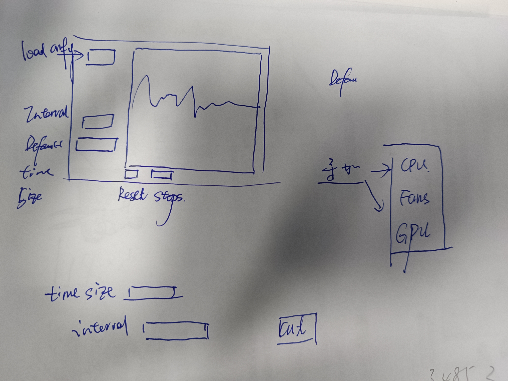
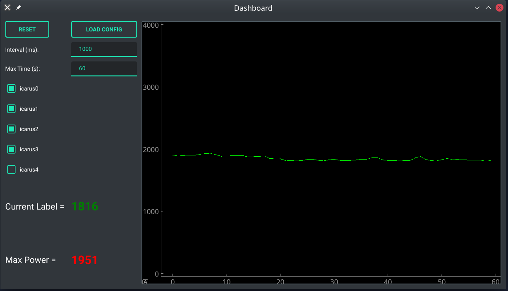

2207-功耗监测软件开发笔记
Version 0.0
功耗监测软件
2022-07-05 开发测试
为了更好的对软件的功耗和行为进行监测
设计阶段 1
首先，启发我完善该项目的是一位师弟: https://github.com/xwy-bit
原始项目： https://github.com/xwy-bit/IPMI
那么整理需求，绘制设计草稿：

需求有如下：
- 如果绘制程序的设置进行了变更，我们需要 Reset
- 可以读取 IPMI config，如果将账户和密码写在程序中不方便
- 可以读取峰值功耗，从而检测是否超过了 3kW
- 可以设置时间间隔和检测时间长度
- UI 美观
Development Step 1
首先我们选择框架和组件。框架上选择 PyQt6 作为顶层框架，之后开始设计布局：
1 | |
设计框架完成之后开始设计链接逻辑
按钮逻辑
Start/Reset 按钮:
- 重置 Plot
- 读取数值
- 不重置机器配置文件
- 重置 timer
Load 按钮：
- 重置 Plot
- 重置机器配置文件
- 重置布局
- 重置 timer
CheckBox 逻辑
勾选了新的机器之后需要停止 timer
输入文本逻辑
- 重置 Plot
- 读取数值
- 不重置机器配置文件
- 重置 timer
分别 connected 对应函数即可。
效果如下：

之后的计划
- [ ] 代码重构，添加注释
- [ ] 多条曲线分别显示机器的功耗
- [ ] 显示 GPU 和 CPU 的功耗
- [ ] 曲线平滑、粗细调整
- [ ] 添加图例
- [ ] 坐标轴添加单位
- [ ] x 轴更新为程序运行时间
- [ ] 添加风扇控制页面
- [ ] Label 的自体调整
Reference
- Qt6 教程 https://maicss.gitbook.io/pyqt-chinese-tutoral/pyqt6/layout
- qt-theme https://github.com/UN-GCPDS/qt-material
- 更新 layout 方法 https://stackoverflow.com/questions/7882749/how-to-update-a-qlayout-and-get-the-new-dimensions-before-returning
- qt 字体设置 https://stackoverflow.com/questions/1464591/how-to-create-a-bold-red-text-label-in-qt
2207-功耗监测软件开发笔记
https://chivier.github.io/2022/07/06/2022/2207-功耗监测软件开发笔记/